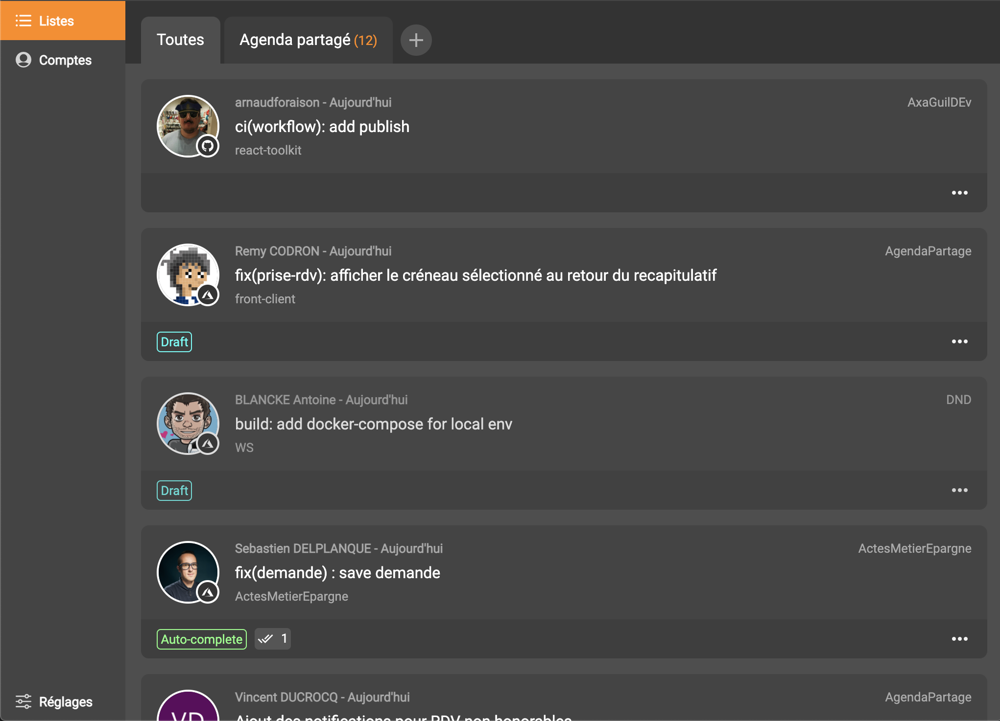

Your team's pull requests at a glance.
Skizzle is a pull request manager that allows you see all your teams work quickly in a single view. It works with your Azure DevOps and Github accounts.
 Download Skizzle for macOS Download Skizzle for Windows